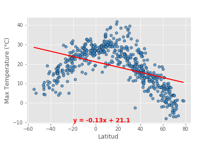

The weather and apis
The main purpouse of the project was to determine the Ideal location for a vacation.
And some of the conclutions of the work were:
- The wather it is affected by the latitud, however,
it is also affected by the time of the day that the data is observed and the season.
-
The complex relationships between fronts (high an low pressure) cause different types of wind and weather patterns.
- It may be conclude that the well known premises that the highest temperatures are located near de equator.
